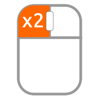

Liste des exercices
Les clics
Pour s'exercer au clic, double clic et clic droit : cliquer ici
Pour s'exercer au glisser déposé : cliquer ici
Placer le curseur, sélectionner du texte : cliquer ici
Saisir du texte, des majuscules, sélection et modification de style : cliquer ici
Saisir du texte avec de la ponctuation et des caractères compliqués : cliquer ici
trouver les caractères de ponctuation : cliquer ici
Utiliser des raccourcis clavier et faire de la mise en page : cliquer ici
La touche TAB : cliquer ici
Quelques accents difficiles à faire : cliquer ici
Suppressions et retours en arrière : cliquer ici
Les touches de déplacement et les sélections : cliquer ici
Copier, déplacer du texte : cliquer ici